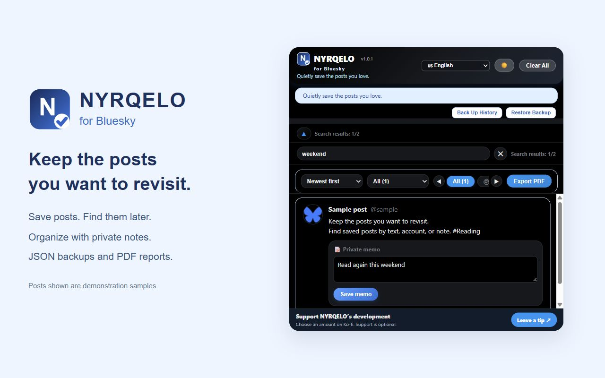
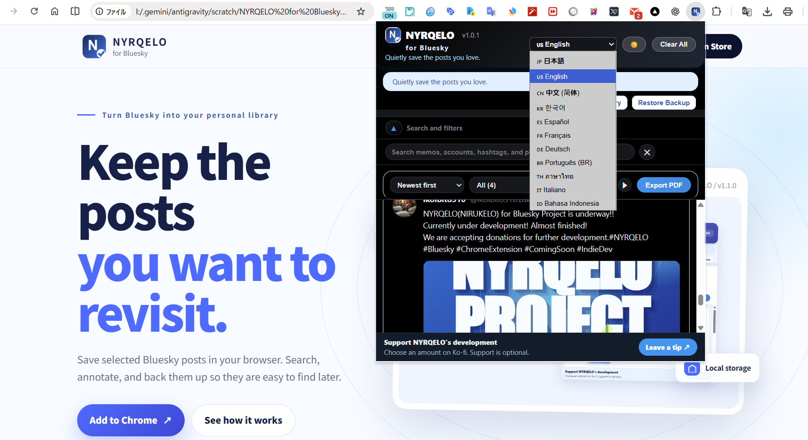
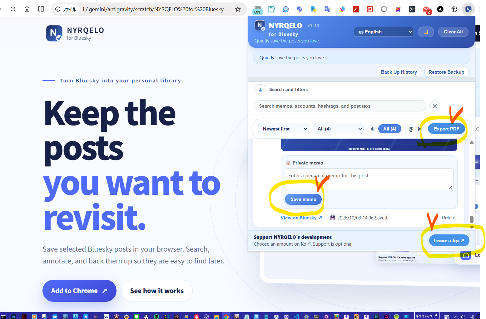
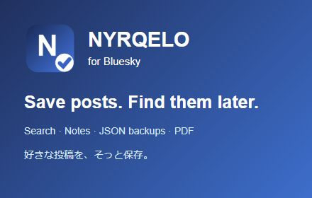

BLUESKY POST ORGANIZER
保存した投稿を、すぐ見つける。
NYRQELOは、Blueskyの投稿をブラウザー内に保存し、検索・メモ・バックアップで整理できるChrome拡張機能です。
THE APP
必要な操作を、一画面で。
NYRQELO

画面内の投稿は説明用のサンプルです。

NYRQELO保存・検索・整理を一つの画面で
WHAT YOU CAN DO
NYRQELOでできること。
投稿を保存
本文、投稿者情報、元投稿リンク、画像や動画の参照情報を保存。
検索・絞り込み
本文、アカウント、ハッシュタグ、メモから検索。保存日時でも整理。
自分用メモ
投稿ごとにメモを追加・編集し、メモの内容から再検索。
バックアップ
JSONで保存・復元。重複を除外し、印刷画面からPDF保存。
表示を選択
ライト／ダークテーマと、日本語・英語を含む11言語に対応。
ローカル保存
投稿、メモ、設定をブラウザー内に保存。広告・アクセス解析なし。
HOW TO USE
使い方は3ステップ。
- 1拡張機能を追加Chrome ウェブストアから追加してBlueskyを開きます。
- 2投稿を保存投稿に表示されるNYRQELOの保存ボタンを押します。
- 3検索・整理ツールバーから開いて、検索やメモで整理します。

メモ保存とPDF出力
OPTIONAL SUPPORT
便利なら、開発を応援。
Ko-fiを通じた任意の開発支援を受け付けています。支援の有無によって、利用できる機能は変わりません。
いただいたご支援は、さまざまなアプリの開発と、NYRQELOをさらに進化させるために活用します。
ご意見・ご要望があれば、下のお問い合わせフォームからお知らせください。
✓ 支援は任意✓ 機能差なし
♥Ko-fiで開発を応援する↗
外部サイトKo-fiが開きます。
PRIVACY
履歴はブラウザー内に保存。
保存した投稿、メモ、設定はChromeの拡張機能用ローカルストレージに保存します。開発者サーバーへの投稿・メモ送信処理、広告、アクセス解析はありません。
プライバシーポリシーを読む ↗CONTACT
お問い合わせ
必要事項を入力して、このページから直接送信できます。